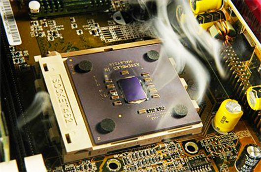
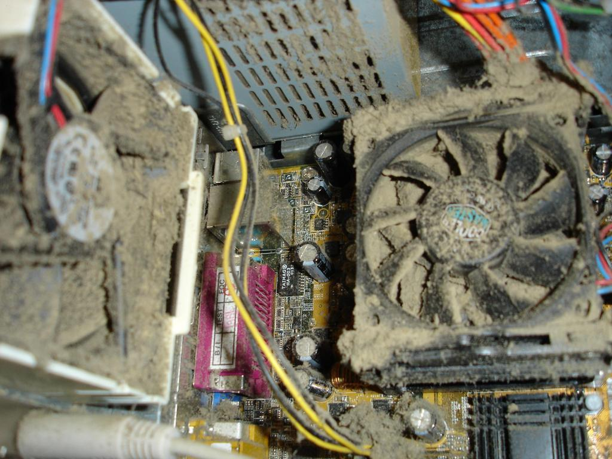
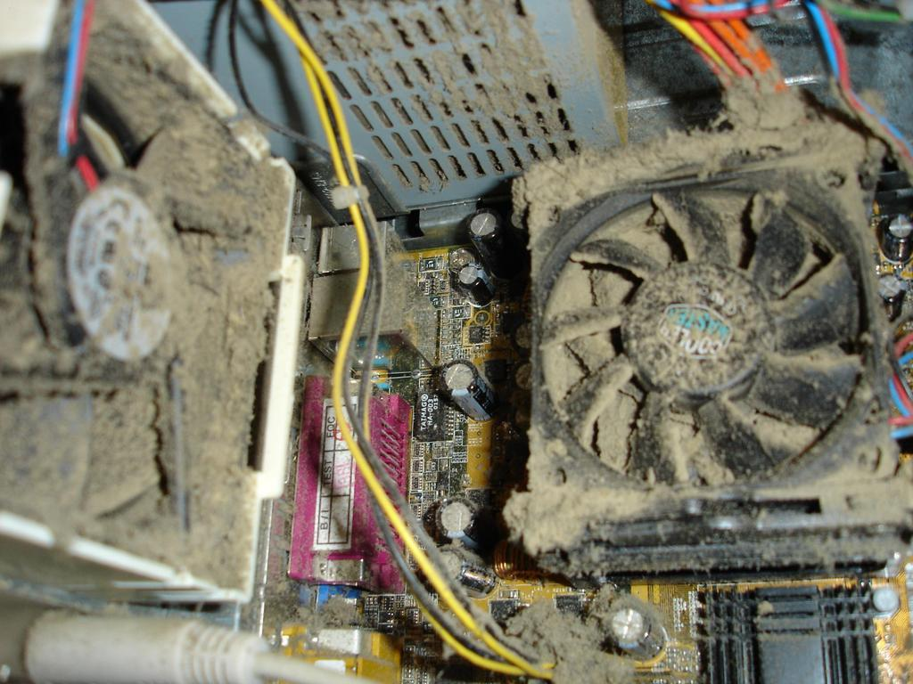
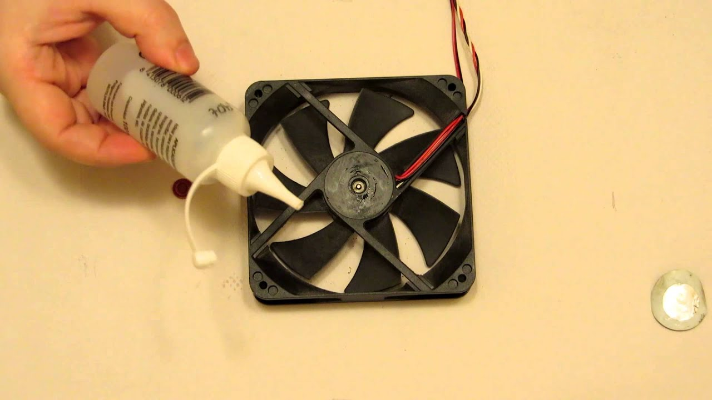
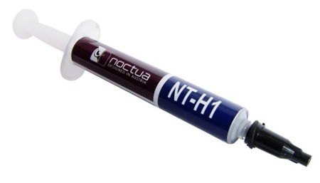
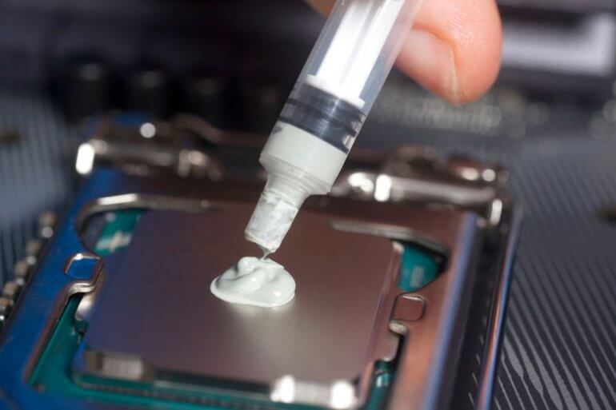
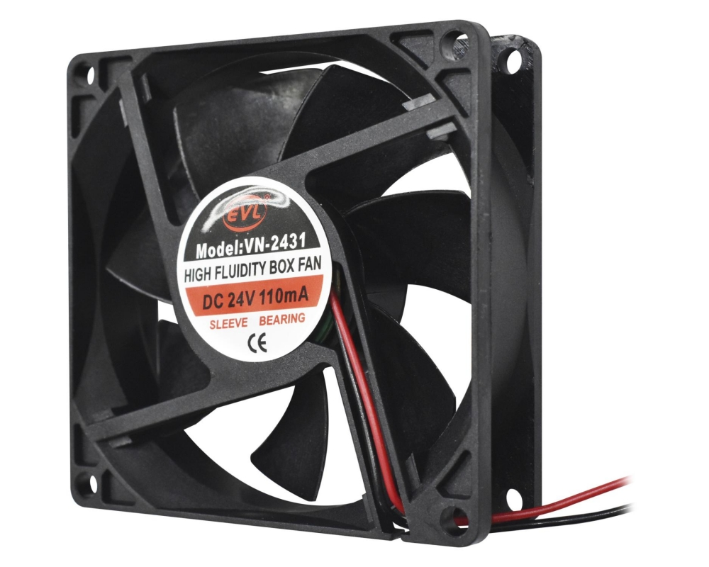
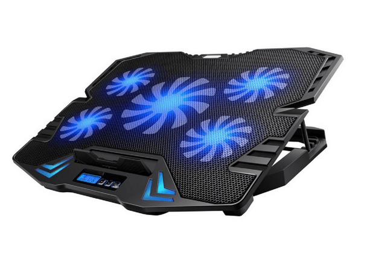

¿Por qué el equipo se sobre calienta?
El sobre calentamiento del Pc se suele dar por que el equipo esta muy sucio, esta misma suciedad se acumula en partes como el procesador los disipadores esto causa que estos componentes se sobrecalienten y el equipo se llegue a apagar tratando de evitar que el procesador se queme, aquí les mostraremos que hacer en caso de que tu equipo se este sobrecalentando de sobre manera.
Cómo evitarlo
Para evitaer que tu equipo se sobrecaliente debemis tener en las mejores condiciones nuestro equipo, por esto mismo es recomendable realizarle un mantenimiento preventivo a nuestros equipos informaticos cada 6 o 4 meces dependiendo de nuestra disponibilidad, asi como mantener nuestra area de trabajo limpia para evitar que esta suciedad pueda llegar a entrar a nuestro pc.
Ahora si ves que tu equipo ya se esta sobrecalentando hay que actuar de inmediato pues esto puede llegar a dañas partes importantes de nuestro navegador.

Como actuar ante esta situación
Como paso principal e indispensable tenemos que abrir nuestro computador, para esto tendremos que poner nuestro equipo del lado de la tapa y retirar la misma, una vez abirto el pc revisaremos los disipadores del mismo para revisar si estos estan en buen estado.
 

¿Qué hacer si mis disipadores estan sucios?
Para limpiar el polvo exedente que este en el culer procederemos a retirar los disipadores y retiraremos las motas de polvo con un cepillo antiestatico y luego de esto retiraremos el polvo con el spry de aire comprimido o en el caso de no tener aire comprimido soplaremos para retirar el polvo que este tenga, luego de esto como algo extra que de igual manera mejorara el rendimiento de nuestros disipadores sera colocarles aceite.
En la parte posterior del disipador encontraremos una pegatina misma que vamos a retirar sonde encontraremos el rotor del disipador donde colocaremos una gota de aceite para componentes electricos de preferencia uno antiestatico o que no conduzca la electricidad, haremos esto con todos los dicipadores incluyendo los dicipadores del procesador y de las tarjetas graficas en el caso de que hubieran.

Colocar PAsta termica
¿Qué es la pasta termica?
Es un conductor de calor que puede ser aplicada entre dos o más componentes que no poseen una conexión directa . Ya que permite la disipación de calor evitando que estos componentes se sobrecalienten entre sí

¿Cómo colocar pasta termica?
Para colocar la pasta termica tendremos que retirar el disipador del procesador y procedermos a colocar la pasta termica sobre el procesador procurar poner una cantidad no muy exagerada para evitar que esta se derrame alrededor del mismo pero la suficiente para cubrir la mayoria del procesador, una de las mejores maneras de colocarla en colocando una cantidad similar a un grano de arroz en el centro asi este queda cubierto casi en su mayoria si que esta se derrame.

Uso de un Ventilador Externo
Al hacer todo lo que explicamos anteriormente mencionado aun tu equipo sigue presentando problemas de calentamiento podrias optar por colocar otro disipador dentro del gabinete de nuestro computador o en el caso de tener una laptop un ventilador externo.
Para colocar un disipador en el gabinete basta con conectarlo con su cable correspondiente y atornillarlo en el gabinete.

